Chapter 6: Acellular Pathogens¶
Introduction¶
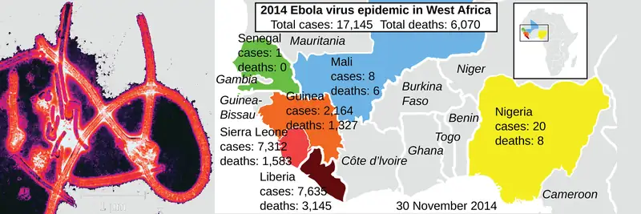
Public health measures in the developed world have dramatically reduced mortality from viral epidemics. But when epidemics do occur, they can spread quickly with global air travel. In 2009, an outbreak of H1N1 influenza spread across various continents. In early 2014, cases of Ebola in Guinea led to a massive epidemic in western Africa. This included the case of an infected man who traveled to the United States, sparking fears the epidemic might spread beyond Africa.
Until the late 1930s and the advent of the electron microscope, no one had seen a virus. Yet treatments for preventing or curing viral infections were used and developed long before that. Historical records suggest that by the 17th century, and perhaps earlier, inoculation (also known as variolation) was being used to prevent the viral disease smallpox in various parts of the world. By the late 18th century, Englishman Edward Jenner was inoculating patients with cowpox to prevent smallpox, a technique he coined vaccination.1
Today, the structure and genetics of viruses are well defined, yet new discoveries continue to reveal their complexities. In this chapter, we will learn about the structure, classification, and cultivation of viruses, and how they impact their hosts. In addition, we will learn about other infective particles such as viroids and prions.
6.1 Viruses¶
Learning Objectives
By the end of this section, you will be able to:
- Describe the general characteristics of viruses as pathogens
- Describe viral genomes
- Describe the general characteristics of viral life cycles
- Differentiate among bacteriophages, plant viruses, and animal viruses
- Describe the characteristics used to identify viruses as obligate intracellular parasites
Clinical Focus: Part 1
David, a 45-year-old journalist, has just returned to the U.S. from travels in Russia, China, and Africa. He is not feeling well, so he goes to his general practitioner complaining of weakness in his arms and legs, fever, headache, noticeable agitation, and minor discomfort. He thinks it may be related to a dog bite he suffered while interviewing a Chinese farmer. He is experiencing some prickling and itching sensations at the site of the bite wound, but he tells the doctor that the dog seemed healthy and that he had not been concerned until now. The doctor ordered a culture and sensitivity test to rule out bacterial infection of the wound, and the results came back negative for any possible pathogenic bacteria.
- Based on this information, what additional tests should be performed on the patient?
- What type of treatment should the doctor recommend?
Jump to the next Clinical Focus box.
Despite their small size, which prevented them from being seen with light microscopes, the discovery of a filterable component smaller than a bacterium that causes tobacco mosaic disease (TMD) dates back to 1892.2 At that time, Dmitri Ivanovski, a Russian botanist, discovered the source of TMD by using a porcelain filtering device first invented by Charles Chamberland and Louis Pasteur in Paris in 1884. Porcelain Chamberland filters have a pore size of 0.1 µm, which is small enough to remove all bacteria ≥0.2 µm from any liquids passed through the device. An extract obtained from TMD-infected tobacco plants was made to determine the cause of the disease. Initially, the source of the disease was thought to be bacterial. It was surprising to everyone when Ivanovski, using a Chamberland filter, found that the cause of TMD was not removed after passing the extract through the porcelain filter. So if a bacterium was not the cause of TMD, what could be causing the disease? Ivanovski concluded the cause of TMD must be an extremely small bacterium or bacterial spore. Other scientists, including Martinus Beijerinck, continued investigating the cause of TMD. It was Beijerinck, in 1899, who eventually concluded the causative agent was not a bacterium but, instead, possibly a chemical, like a biological poison we would describe today as a toxin. As a result, the word virus, Latin for poison, was used to describe the cause of TMD a few years after Ivanovski’s initial discovery. Even though he was not able to see the virus that caused TMD, and did not realize the cause was not a bacterium, Ivanovski is credited as the original discoverer of viruses and a founder of the field of virology.
Today, we can see viruses using electron microscopes (Figure 6.2) and we know much more about them. Viruses are distinct biological entities; however, their evolutionary origin is still a matter of speculation. In terms of taxonomy, they are not included in the tree of life because they are acellular (not consisting of cells). In order to survive and reproduce, viruses must infect a cellular host, making them obligate intracellular parasites. The genome of a virus enters a host cell and directs the production of the viral components, proteins and nucleic acids, needed to form new virus particles called virions. New virions are made in the host cell by assembly of viral components. The new virions transport the viral genome to another host cell to carry out another round of infection. Table 6.1 summarizes the properties of viruses.
Table 6.1
| Characteristics of Viruses |
|---|
| Infectious, acellular pathogens |
| Obligate intracellular parasites with host and cell-type specificity |
| DNA or RNA genome (never both) |
| Genome is surrounded by a protein capsid and, in some cases, a phospholipid membrane studded with viral glycoproteins |
| Lack genes for many products needed for successful reproduction, requiring exploitation of host-cell genomes to reproduce |
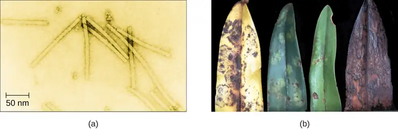
Check Your Understanding
- Why was the first virus investigated mistaken for a toxin?
Hosts and Viral Transmission¶
Viruses can infect every type of host cell, including those of plants, animals, fungi, protists, bacteria, and archaea. Most viruses will only be able to infect the cells of one or a few species of organism. This is called the host range. However, having a wide host range is not common and viruses will typically only infect specific hosts and only specific cell types within those hosts. The viruses that infect bacteria are called bacteriophages, or simply phages. The word phage comes from the Greek word for devour. Other viruses are just identified by their host group, such as animal or plant viruses. Once a cell is infected, the effects of the virus can vary depending on the type of virus. Viruses may cause abnormal growth of the cell or cell death, alter the cell’s genome, or cause little noticeable effect in the cell.
Viruses can be transmitted through direct contact, indirect contact with fomites, or through a vector: an animal that transmits a pathogen from one host to another. Arthropods such as mosquitoes, ticks, and flies, are typical vectors for viral diseases, and they may act as mechanical vectors or biological vectors. Mechanical transmission occurs when the arthropod carries a viral pathogen on the outside of its body and transmits it to a new host by physical contact. Biological transmission occurs when the arthropod carries the viral pathogen inside its body and transmits it to the new host through biting.
In humans, a wide variety of viruses are capable of causing various infections and diseases. Some of the deadliest emerging pathogens in humans are viruses, yet we have few treatments or drugs to deal with viral infections, making them difficult to eradicate.
Viruses that can be transmitted from an animal host to a human host can cause zoonoses. For example, the avian influenza virus originates in birds, but can cause disease in humans. Reverse zoonoses are caused by infection of an animal by a virus that originated in a human.
Micro Connections: Fighting Bacteria with Viruses
The emergence of superbugs, or multidrug resistant bacteria, has become a major challenge for pharmaceutical companies and a serious health-care problem. According to a 2013 report by the US Centers for Disease Control and Prevention (CDC), more than 2 million people are infected with drug-resistant bacteria in the US annually, resulting in at least 23,000 deaths.3 The continued use and overuse of antibiotics will likely lead to the evolution of even more drug-resistant strains.
One potential solution is the use of phage therapy, a procedure that uses bacteria-killing viruses (bacteriophages) to treat bacterial infections. Phage therapy is not a new idea. The discovery of bacteriophages dates back to the early 20th century, and phage therapy was first used in Europe in 1915 by the English bacteriologist Frederick Twort.4 However, the subsequent discovery of penicillin and other antibiotics led to the near abandonment of this form of therapy, except in the former Soviet Union and a few countries in Eastern Europe. Interest in phage therapy outside of the countries of the former Soviet Union is only recently re-emerging because of the rise in antibiotic-resistant bacteria.5
Phage therapy has some advantages over antibiotics in that phages kill only one specific bacterium, whereas antibiotics kill not only the pathogen but also beneficial bacteria of the normal microbiota. Development of new antibiotics is also expensive for drug companies and for patients, especially for those who live in countries with high poverty rates.
Phages have also been used to prevent food spoilage. In 2006, the US Food and Drug Administration approved the use of a solution containing six bacteriophages that can be sprayed on lunch meats such as bologna, ham, and turkey to kill Listeria monocytogenes, a bacterium responsible for listeriosis, a form of food poisoning. Some consumers have concerns about the use of phages on foods, however, especially given the rising popularity of organic products. Foods that have been treated with phages must declare “bacteriophage preparation” in the list of ingredients or include a label declaring that the meat has been “treated with antimicrobial solution to reduce microorganisms.”6
Check Your Understanding
- Why do humans not have to be concerned about the presence of bacteriophages in their food?
- What are three ways that viruses can be transmitted between hosts?
Viral Structures¶
In general, virions (viral particles) are small and cannot be observed using a regular light microscope. They are much smaller than prokaryotic and eukaryotic cells; this is an adaptation allowing viruses to infect these larger cells (see Figure 6.3). The size of a virion can range from 20 nm for small viruses up to 900 nm for typical, large viruses (see Figure 6.4). Recent discoveries, however, have identified new giant viral species, such as Pandoravirus salinus and Pithovirus sibericum, with sizes approaching that of a bacterial cell.7
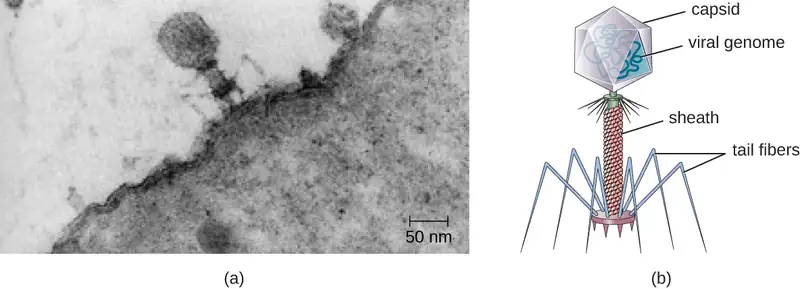
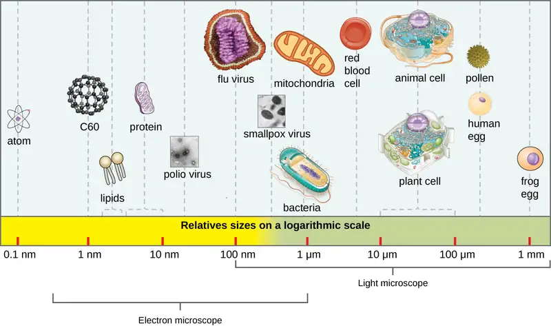
In 1935, after the development of the electron microscope, Wendell Stanley was the first scientist to crystallize the structure of the tobacco mosaic virus and discovered that it is composed of RNA and protein. In 1943, he isolated Influenza B virus, which contributed to the development of an influenza (flu) vaccine. Stanley’s discoveries unlocked the mystery of the nature of viruses that had been puzzling scientists for over 40 years and his contributions to the field of virology led to him being awarded the Nobel Prize in 1946.
As a result of continuing research into the nature of viruses, we now know they consist of a nucleic acid (either RNA or DNA, but never both) surrounded by a protein coat called a capsid (see Figure 6.5). The interior of the capsid is not filled with cytosol, as in a cell, but instead it contains the bare necessities in terms of genome and enzymes needed to direct the synthesis of new virions. Each capsid is composed of protein subunits called capsomeres made of one or more different types of capsomere proteins that interlock to form the closely packed capsid.
There are two categories of viruses based on general composition. Viruses formed from only a nucleic acid and capsid are called naked viruses or nonenveloped viruses. Viruses formed with a nucleic-acid packed capsid surrounded by a lipid layer are called enveloped viruses (see Figure 6.5). The viral envelope is a small portion of phospholipid membrane obtained as the virion buds from a host cell. The viral envelope may either be intracellular or cytoplasmic in origin.
Extending outward and away from the capsid on some naked viruses and enveloped viruses are protein structures called spikes. At the tips of these spikes are structures that allow the virus to attach and enter a cell, like the influenza virus hemagglutinin spikes (H) or enzymes like the neuraminidase (N) influenza virus spikes that allow the virus to detach from the cell surface during release of new virions. Influenza viruses are often identified by their H and N spikes. For example, H1N1 influenza viruses were responsible for the pandemics in 1918 and 2009,8 H2N2 for the pandemic in 1957, and H3N2 for the pandemic in 1968.

Viruses vary in the shape of their capsids, which can be either helical, polyhedral, or complex. A helical capsid forms the shape of tobacco mosaic virus (TMV), a naked helical virus, and Ebola virus, an enveloped helical virus. The capsid is cylindrical or rod shaped, with the genome fitting just inside the length of the capsid. Polyhedral capsids form the shapes of poliovirus and rhinovirus, and consist of a nucleic acid surrounded by a polyhedral (many-sided) capsid in the form of an icosahedron. An icosahedral capsid is a three-dimensional, 20-sided structure with 12 vertices. These capsids somewhat resemble a soccer ball. Both helical and polyhedral viruses can have envelopes. Viral shapes seen in certain types of bacteriophages, such as T4 phage, and poxviruses, like vaccinia virus, may have features of both polyhedral and helical viruses so they are described as a complex viral shape (see Figure 6.6). In the bacteriophage complex form, the genome is located within the polyhedral head and the sheath connects the head to the tail fibers and tail pins that help the virus attach to receptors on the host cell’s surface. Poxviruses that have complex shapes are often brick shaped, with intricate surface characteristics not seen in the other categories of capsid.
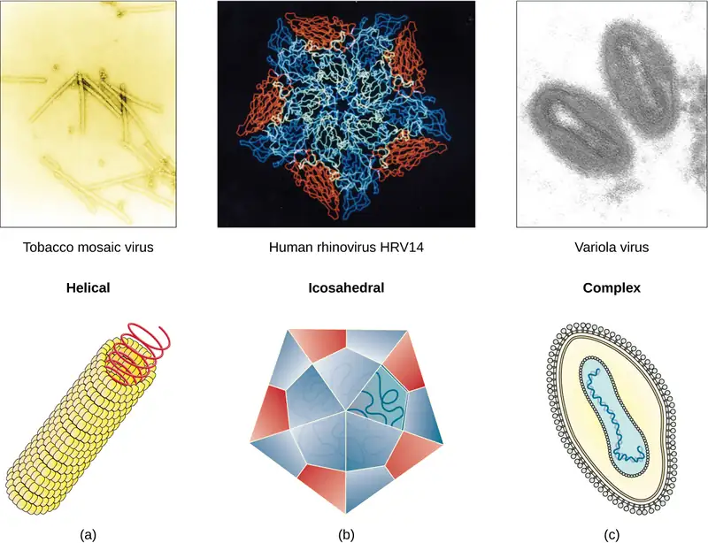
Check Your Understanding
- Which types of viruses have spikes?
Classification and Taxonomy of Viruses¶
Although viruses are not classified in the three domains of life, their numbers are great enough to require classification. Since 1971, the International Union of Microbiological Societies Virology Division has given the task of developing, refining, and maintaining a universal virus taxonomy to the International Committee on Taxonomy of Viruses (ICTV). Since viruses can mutate so quickly, it can be difficult to classify them into a genus and a species epithet using the binomial nomenclature system. Thus, the ICTV’s viral nomenclature system classifies viruses into families and genera based on viral genetics, chemistry, morphology, and mechanism of multiplication. To date, the ICTV has classified known viruses in seven orders, 96 families, and 350 genera. Viral family names end in -viridae (e.g, Parvoviridae) and genus names end in −virus (e.g., Parvovirus). The names of viral orders, families, and genera are all italicized. When referring to a viral species, we often use a genus and species epithet such as Pandoravirus dulcis or Pandoravirus salinus.
The Baltimore classification system is an alternative to ICTV nomenclature. The Baltimore system classifies viruses according to their genomes (DNA or RNA, single versus double stranded, and mode of replication). This system thus creates seven groups of viruses that have common genetics and biology.
Link to Learning
Explore the latest virus taxonomy at the ICTV website.
Aside from formal systems of nomenclature, viruses are often informally grouped into categories based on chemistry, morphology, or other characteristics they share in common. Categories may include naked or enveloped structure, single-stranded (ss) or double-stranded (ds) DNA or ss or ds RNA genomes, segmented or nonsegmented genomes, and positive-strand (+) or negative-strand (−) RNA. For example, herpes viruses can be classified as a dsDNA enveloped virus; human immunodeficiency virus (HIV) is a +ssRNA enveloped virus, and tobacco mosaic virus is a +ssRNA virus. Other characteristics such as host specificity, tissue specificity, capsid shape, and special genes or enzymes may also be used to describe groups of similar viruses. Table 6.2 lists some of the most common viruses that are human pathogens by genome type.
Table 6.2
| Common Pathogenic Viruses | |||
|---|---|---|---|
| Genome | Family | Example Virus | Clinical Features |
| dsDNA, enveloped | Poxviridae | Orthopoxvirus | Skin papules, pustules, lesions |
| Poxviridae | Parapoxvirus | Skin lesions | |
| Herpesviridae | Simplexvirus | Cold sores, genital herpes, sexually transmitted disease | |
| dsDNA, naked | Adenoviridae | Atadenovirus | Respiratory infection (common cold) |
| Papillomaviridae | Papillomavirus | Genital warts, cervical, vulvar, or vaginal cancer | |
| Reoviridae | Reovirus | Gastroenteritis severe diarrhea (stomach flu) | |
| ssDNA, naked | Parvoviridae | Adeno-associated dependoparvovirus A | Respiratory tract infection |
| Parvoviridae | Adeno-associated dependoparvovirus B | Respiratory tract infection | |
| dsRNA, naked | Reoviridae | Rotavirus | Gastroenteritis |
| +ssRNA, naked | Picornaviridae | Enterovirus C | Poliomyelitis |
| Picornaviridae | Rhinovirus | Upper respiratory tract infection (common cold) | |
| Picornaviridae | Hepatovirus | Hepatitis | |
| +ssRNA, enveloped | Togaviridae | Alphavirus | Encephalitis, hemorrhagic fever |
| Togaviridae | Rubivirus | Rubella | |
| Retroviridae | Lentivirus | Acquired immune deficiency syndrome (AIDS) | |
| −ssRNA, enveloped | Filoviridae | Zaire Ebolavirus | Hemorrhagic fever |
| Orthomyxoviridae | Influenzavirus A, B, C | Flu | |
| Rhabdoviridae | Lyssavirus | Rabies | |
Check Your Understanding
- What are the types of virus genomes?
Classification of Viral Diseases¶
While the ICTV has been tasked with the biological classification of viruses, it has also played an important role in the classification of diseases caused by viruses. To facilitate the tracking of virus-related human diseases, the ICTV has created classifications that link to the International Classification of Diseases (ICD), the standard taxonomy of disease that is maintained and updated by the World Health Organization (WHO). The ICD assigns an alphanumeric code of up to six characters to every type of viral infection, as well as all other types of diseases, medical conditions, and causes of death. This ICD code is used in conjunction with two other coding systems (the Current Procedural Terminology, and the Healthcare Common Procedure Coding System) to categorize patient conditions for treatment and insurance reimbursement.
For example, when a patient seeks treatment for a viral infection, ICD codes are routinely used by clinicians to order laboratory tests and prescribe treatments specific to the virus suspected of causing the illness. This ICD code is then used by medical laboratories to identify tests that must be performed to confirm the diagnosis. The ICD code is used by the health-care management system to verify that all treatments and laboratory work performed are appropriate for the given virus. Medical coders use ICD codes to assign the proper code for procedures performed, and medical billers, in turn, use this information to process claims for reimbursement by insurance companies. Vital-records keepers use ICD codes to record cause of death on death certificates, and epidemiologists used ICD codes to calculate morbidity and mortality statistics.
Check Your Understanding
- Identify two locations where you would likely find an ICD code.
Clinical Focus: Part 2
David’s doctor was concerned that his symptoms included prickling and itching at the site of the dog bite; these sensations could be early symptoms of rabies. Several tests are available to diagnose rabies in live patients, but no single antemortem test is adequate. The doctor decided to take samples of David’s blood, saliva, and skin for testing. The skin sample was taken from the nape of the neck (posterior side of the neck near the hairline). It was about 6-mm long and contained at least 10 hair follicles, including the superficial cutaneous nerve. An immunofluorescent staining technique was used on the skin biopsy specimen to detect rabies antibodies in the cutaneous nerves at the base of the hair follicles. A test was also performed on a serum sample from David’s blood to determine whether any antibodies for the rabies virus had been produced.
Meanwhile, the saliva sample was used for reverse transcriptase-polymerase chain reaction (RT-PCR) analysis, a test that can detect the presence of viral nucleic acid (RNA). The blood tests came back positive for the presence of rabies virus antigen, prompting David’s doctor to prescribe prophylactic treatment. David is given a series of intramuscular injections of human rabies immunoglobulin along with a series of rabies vaccines.
- Why does the immunofluorescent technique look for rabies antibodies rather than the rabies virus itself?
- If David has contracted rabies, what is his prognosis?
Jump to the next Clinical Focus box. Go back to the previous Clinical Focus box.
6.2 The Viral Life Cycle¶
Learning Objectives
By the end of this section, you will be able to:
- Describe the lytic and lysogenic life cycles
- Describe the replication process of animal viruses
- Describe unique characteristics of retroviruses and latent viruses
- Discuss human viruses and their virus-host cell interactions
- Explain the process of transduction
- Describe the replication process of plant viruses
All viruses depend on cells for reproduction and metabolic processes. By themselves, viruses do not encode for all of the enzymes necessary for viral replication. But within a host cell, a virus can commandeer cellular machinery to produce more viral particles. Bacteriophages replicate only in the cytoplasm, since prokaryotic cells do not have a nucleus or organelles. In eukaryotic cells, most DNA viruses can replicate inside the nucleus, with an exception observed in the large DNA viruses, such as the poxviruses, that can replicate in the cytoplasm. With a few exceptions, RNA viruses that infect animal cells replicate in the cytoplasm. An important exception that will be highlighted later is Influenza virus.
The Life Cycle of Viruses with Prokaryote Hosts¶
The life cycle of bacteriophages has been a good model for understanding how viruses affect the cells they infect, since similar processes have been observed for eukaryotic viruses, which can cause immediate death of the cell or establish a latent or chronic infection. Virulent phages typically lead to the death of the cell through cell lysis. Temperate phages, on the other hand, can become part of a host chromosome and are replicated with the cell genome until such time as they are induced to make newly assembled viruses, or progeny viruses.
The Lytic Cycle¶
During the lytic cycle of virulent phage, the bacteriophage takes over the cell, reproduces new phages, and destroys the cell. T-even phage is a good example of a well-characterized class of virulent phages. There are five stages in the bacteriophage lytic cycle (see Figure 6.7). Attachment is the first stage in the infection process in which the phage interacts with specific bacterial surface receptors (e.g., lipopolysaccharides and OmpC protein on host surfaces). Most phages have a narrow host range and may infect one species of bacteria or one strain within a species. This unique recognition can be exploited for targeted treatment of bacterial infection by phage therapy or for phage typing to identify unique bacterial subspecies or strains. The second stage of infection is entry or penetration. This occurs through contraction of the tail sheath, which acts like a hypodermic needle to inject the viral genome through the cell wall and membrane. The phage head and remaining components remain outside the bacteria.
![This figure outlines the stages of the lytic cycle. Step 1 is attachment when the phage attaches to the surface of the host. The bacteriophage is shown sitting on the surface of the bacterial host cell. Step 2 is penetration when the viral DNA enters the host cell. The image shows DNA from within the virus being injected into the host DNA. Step 3 is biosynthesis when the phage DNA replicates and the phage proteins are made. The image shows various pieces of virus being built within the cell. Step 4 is maturation when the new phage particles are assembled. This shows the viral components being put together in the cell. The fifth step is lysis when the cell lyses and the newly made phages are released. This shows the cell bursting and built viruses being released.](img/osc-microbio-06-02-lyticcycle.webp)
The third stage of infection is biosynthesis of new viral components. After entering the host cell, the virus synthesizes virus-encoded endonucleases to degrade the bacterial chromosome. It then hijacks the host cell to replicate, transcribe, and translate the necessary viral components (capsomeres, sheath, base plates, tail fibers, and viral enzymes) for the assembly of new viruses. Polymerase genes are usually expressed early in the cycle, while capsid and tail proteins are expressed later. During the maturation phase, new virions are created. To liberate free phages, the bacterial cell wall is disrupted by phage proteins such as holin or lysozyme. The final stage is release. Mature viruses burst out of the host cell in a process called lysis and the progeny viruses are liberated into the environment to infect new cells.
The Lysogenic Cycle¶
In a lysogenic cycle, the phage genome also enters the cell through attachment and penetration. A prime example of a phage with this type of life cycle is the lambda phage. During the lysogenic cycle, instead of killing the host, the phage genome integrates into the bacterial chromosome and becomes part of the host. The integrated phage genome is called a prophage. A bacterial host with a prophage is called a lysogen. The process in which a bacterium is infected by a temperate phage is called lysogeny. It is typical of temperate phages to be latent or inactive within the cell. As the bacterium replicates its chromosome, it also replicates the phage’s DNA and passes it on to new daughter cells during reproduction. The presence of the phage may alter the phenotype of the bacterium, since it can bring in extra genes (e.g., toxin genes that can increase bacterial virulence). This change in the host phenotype is called lysogenic conversion or phage conversion. Some bacteria, such as Vibrio cholerae and Clostridium botulinum, are less virulent in the absence of the prophage. The phages infecting these bacteria carry the toxin genes in their genome and enhance the virulence of the host when the toxin genes are expressed. In the case of V. cholera, phage encoded toxin can cause severe diarrhea; in C. botulinum, the toxin can cause paralysis. During lysogeny, the prophage will persist in the host chromosome until induction, which results in the excision of the viral genome from the host chromosome. After induction has occurred the temperate phage can proceed through a lytic cycle and then undergo lysogeny in a newly infected cell (see Figure 6.8).
![The steps of the lytic and lysogenic cycles. First the phage infects a cell; this shows the virus sitting on the outside of a cell and injecting DNA into the cell. In the next step the phage DNA becomes incorporated into the host genome. In the next step, the cell divides and prophage DNA is passed to the daughter cells. The image shows the cell dividing and the viral DNA within the host genome also being passed to the daughter cell. The next step shows the viral DNA jumping out of the host genome. Under stressful conditions, the prophage DNA is excised from the bacterial chromosomes and enters the lytic cycle. Next, the phage DNA replicates and phage proteins are made. This shows viral pieces being made within the cell. The next step is when the new phage particles are assembled. This shows the virus being build. The final step is when the cell lyses and releases the newly made phages.](img/osc-microbio-06-02-lyscycle.webp)
Link to Learning
This video illustrates the lytic cycle.
Check Your Understanding
- Is a latent phage undetectable in a bacterium?
Transduction¶
Transduction occurs when a bacteriophage transfers bacterial DNA from one bacterium to another during sequential infections. There are two types of transduction: generalized and specialized transduction. During the lytic cycle of viral replication, the virus hijacks the host cell, degrades the host chromosome, and makes more viral genomes. As it assembles and packages DNA into the phage head, packaging occasionally makes a mistake. Instead of packaging viral DNA, it takes a random piece of host DNA and inserts it into the capsid. Once released, this virion will then inject the former host’s DNA into a newly infected host. The asexual transfer of genetic information can allow for DNA recombination to occur, thus providing the new host with new genes (e.g., an antibiotic-resistance gene, or a sugar-metabolizing gene). Generalized transduction occurs when a random piece of bacterial chromosomal DNA is transferred by the phage during the lytic cycle. Specialized transduction occurs at the end of the lysogenic cycle, when the prophage is excised and the bacteriophage enters the lytic cycle. Since the phage is integrated into the host genome, the prophage can replicate as part of the host. However, some conditions (e.g., ultraviolet light exposure or chemical exposure) stimulate the prophage to undergo induction, causing the phage to excise from the genome, enter the lytic cycle, and produce new phages to leave host cells. During the process of excision from the host chromosome, a phage may occasionally remove some bacterial DNA near the site of viral integration. The phage and host DNA from one end or both ends of the integration site are packaged within the capsid and are transferred to the new, infected host. Since the DNA transferred by the phage is not randomly packaged but is instead a specific piece of DNA near the site of integration, this mechanism of gene transfer is referred to as specialized transduction (see Figure 6.9). The DNA can then recombine with host chromosome, giving the latter new characteristics. Transduction seems to play an important role in the evolutionary process of bacteria, giving them a mechanism for asexual exchange of genetic information.
![The steps of specialized transduction. Step 1 is viral attachment and penetration. This is when the phage infects a cell. This shows the virus sitting on the outside of a cell and injecting DNA into the cell. Step 2 is integration when the phage DNA becomes incorporated into the host genome. Step 3 is excisionwhen the phage is excised from the bacterial chromosomes along with a short piece of bacterial DNA. The DNA is then packaged into newly formed capsids. When the virus particles are assembled the DNA contains both viral and host segments. Step 4 is infection when the phage contains both viral and bacterial DNA infects a new host cell. Step 5 is recombination when the phage DNA along with the attached bacterial DNA are incorporated into a new cell. The image shows a new bacterial cell with virus DNA as well as other bacterial DNA in its genome.](img/osc-microbio-06-02-transd.webp)
Check Your Understanding
- Which phage life cycle is associated with which forms of transduction?
Life Cycle of Viruses with Animal Hosts¶
Lytic animal viruses follow similar infection stages to bacteriophages: attachment, penetration, biosynthesis, maturation, and release (see Figure 6.10). However, the mechanisms of penetration, nucleic-acid biosynthesis, and release differ between bacterial and animal viruses. After binding to host receptors, animal viruses enter through endocytosis (engulfment by the host cell) or through membrane fusion (viral envelope with the host cell membrane). Many viruses are host specific, meaning they only infect a certain type of host; and most viruses only infect certain types of cells within tissues. This specificity is called a tissue tropism. Examples of this are demonstrated by the poliovirus, which exhibits tropism for the tissues of the brain and spinal cord, or the influenza virus, which has a primary tropism for the respiratory tract.
![Steps of influenza infection. Step 1 is attachment when the influenza virus becomes attached to a target epithelial cell. This image shows a spherical virus binding to the surface of a host cell. Step 2 is penetration when the cell engulfs the virus by endocytosis; this shows the virus within a vacuole. Step 3 is uncoating when the viral contents are released; the image shows the virus being released from the vacuole. Step 4 is biosynthesis when the viral RNA enters the nucleus where it is replicated by RNA polymerase. Step 5 is assembly when the new phage particles are assembled. Step 6 is release when new viral particles are made and released into the extracellular fluid. The cell, which is not killed in the process continues to make new viruses.](img/osc-microbio-06-02-repanvirus.webp)
Animal viruses do not always express their genes using the normal flow of genetic information—from DNA to RNA to protein. Some viruses have a dsDNA genome like cellular organisms and can follow the normal flow. However, others may have ssDNA, dsRNA, or ssRNA genomes. The nature of the genome determines how the genome is replicated and expressed as viral proteins. If a genome is ssDNA, host enzymes will be used to synthesize a second strand that is complementary to the genome strand, thus producing dsDNA. The dsDNA can now be replicated, transcribed, and translated similar to host DNA.
If the viral genome is RNA, a different mechanism must be used. There are three types of RNA genome: dsRNA, positive (+) single-strand (+ssRNA) or negative (−) single-strand RNA (−ssRNA). If a virus has a +ssRNA genome, it can be translated directly to make viral proteins. Viral genomic +ssRNA acts like cellular mRNA. However, if a virus contains a −ssRNA genome, the host ribosomes cannot translate it until the −ssRNA is replicated into +ssRNA by viral RNA-dependent RNA polymerase (RdRP) (see Figure 6.11). The RdRP is brought in by the virus and can be used to make +ssRNA from the original −ssRNA genome. The RdRP is also an important enzyme for the replication of dsRNA viruses, because it uses the negative strand of the double-stranded genome as a template to create +ssRNA. The newly synthesized +ssRNA copies can then be translated by cellular ribosomes.
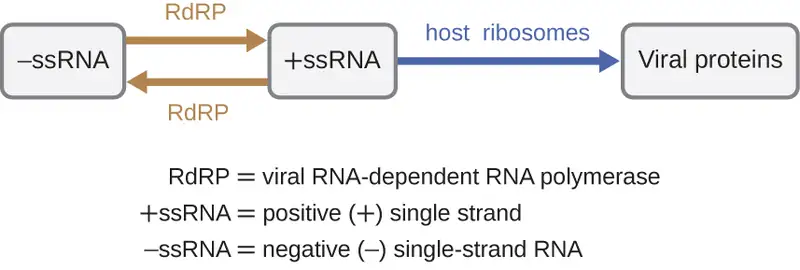
An alternative mechanism for viral nucleic acid synthesis is observed in the retroviruses, which are +ssRNA viruses (see Figure 6.12). Single-stranded RNA viruses such as HIV carry a special enzyme called reverse transcriptase within the capsid that synthesizes a complementary ssDNA (cDNA) copy using the +ssRNA genome as a template. The ssDNA is then made into dsDNA, which can integrate into the host chromosome and become a permanent part of the host. The integrated viral genome is called a provirus. The virus now can remain in the host for a long time to establish a chronic infection. The provirus stage is similar to the prophage stage in a bacterial infection during the lysogenic cycle. However, unlike prophage, the provirus does not undergo excision after splicing into the genome.
![The HIV viral cycle. Step 1: the HIV fuses to the host-cell surface. Specifically, the gp120 proteins on the surface of the virus binds to the CD4. This then binds to a smaller coreceptor (CCR5 or CXCR4). Step 2: HIV RNA, reverse transtriptase, integrase, and other viral proteins enter the host cell. The virus is brought into the host cell and uncoated; both viral RNA and reverse transcriptase are loosed into the cell. Step 3: Viral DNA is formed by reverse transcription. Step 4: Viral DNA is transported across the nucleus and integrates into the host DNA. Integrase found on the viral DNA. The viral DNA in the host DNA is called provirus. Step 5: New viral RNA is used as genomic RNA and to make viral proteins. New viral RNA strands are made and leave the nucleus. Step 6: New viral RNA and proteins move to the cell surface and a new immature HIV forms. The viral is assembled in an outbulging of the host cell. Step 7: The virus matures when protease releases the proteins that form the mature HIV. Mature virion is released.](img/osc-microbio-06-02-hiv.webp)
Check Your Understanding
- Is RNA-dependent RNA polymerase made from a viral gene or a host gene?
Persistent Infections¶
Persistent infection occurs when a virus is not completely cleared from the system of the host but stays in certain tissues or organs of the infected person. The virus may remain silent or undergo productive infection without seriously harming or killing the host. Mechanisms of persistent infection may involve the regulation of the viral or host gene expressions or the alteration of the host immune response. The two primary categories of persistent infections are latent infection and chronic infection. Examples of viruses that cause latent infections include herpes simplex virus (oral and genital herpes), varicella-zoster virus (chickenpox and shingles), and Epstein-Barr virus (mononucleosis). Hepatitis C virus and HIV are two examples of viruses that cause long-term chronic infections.
Latent Infection¶
Not all animal viruses undergo replication by the lytic cycle. There are viruses that are capable of remaining hidden or dormant inside the cell in a process called latency. These types of viruses are known as latent viruses and may cause latent infections. Viruses capable of latency may initially cause an acute infection before becoming dormant.
For example, the varicella-zoster virus infects many cells throughout the body and causes chickenpox, characterized by a rash of blisters covering the skin. About 10 to 12 days postinfection, the disease resolves and the virus goes dormant, living within nerve-cell ganglia for years. During this time, the virus does not kill the nerve cells or continue replicating. It is not clear why the virus stops replicating within the nerve cells and expresses few viral proteins but, in some cases, typically after many years of dormancy, the virus is reactivated and causes a new disease called shingles (Figure 6.13). Whereas chickenpox affects many areas throughout the body, shingles is a nerve cell-specific disease emerging from the ganglia in which the virus was dormant.
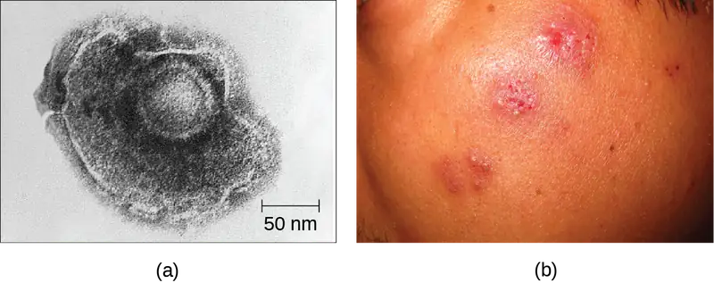
Latent viruses may remain dormant by existing as circular viral genome molecules outside of the host chromosome. Others become proviruses by integrating into the host genome. During dormancy, viruses do not cause any symptoms of disease and may be difficult to detect. A patient may be unaware that they are carrying the virus unless a viral diagnostic test has been performed.
Chronic Infection¶
A chronic infection is a disease with symptoms that are recurrent or persistent over a long time. Some viral infections can be chronic if the body is unable to eliminate the virus. HIV is an example of a virus that produces a chronic infection, often after a long period of latency. Once a person becomes infected with HIV, the virus can be detected in tissues continuously thereafter, but untreated patients often experience no symptoms for years. However, the virus maintains chronic persistence through several mechanisms that interfere with immune function, including preventing expression of viral antigens on the surface of infected cells, altering immune cells themselves, restricting expression of viral genes, and rapidly changing viral antigens through mutation. Eventually, the damage to the immune system results in progression of the disease leading to acquired immunodeficiency syndrome (AIDS). The various mechanisms that HIV uses to avoid being cleared by the immune system are also used by other chronically infecting viruses, including the hepatitis C virus.
Check Your Understanding
- In what two ways can a virus manage to maintain a persistent infection?
Life Cycle of Viruses with Plant Hosts¶
Plant viruses are more similar to animal viruses than they are to bacteriophages. Plant viruses may be enveloped or non-enveloped. Like many animal viruses, plant viruses can have either a DNA or RNA genome and be single stranded or double stranded. However, most plant viruses do not have a DNA genome; the majority have a +ssRNA genome, which acts like messenger RNA (mRNA). Only a minority of plant viruses have other types of genomes.
Plant viruses may have a narrow or broad host range. For example, the citrus tristeza virus infects only a few plants of the Citrus genus, whereas the cucumber mosaic virus infects thousands of plants of various plant families. Most plant viruses are transmitted by contact between plants, or by fungi, nematodes, insects, or other arthropods that act as mechanical vectors. However, some viruses can only be transferred by a specific type of insect vector; for example, a particular virus might be transmitted by aphids but not whiteflies. In some cases, viruses may also enter healthy plants through wounds, as might occur due to pruning or weather damage.
Viruses that infect plants are considered biotrophic parasites, which means that they can establish an infection without killing the host, similar to what is observed in the lysogenic life cycles of bacteriophages. Viral infection can be asymptomatic (latent) or can lead to cell death (lytic infection). The life cycle begins with the penetration of the virus into the host cell. Next, the virus is uncoated within the cytoplasm of the cell when the capsid is removed. Depending on the type of nucleic acid, cellular components are used to replicate the viral genome and synthesize viral proteins for assembly of new virions. To establish a systemic infection, the virus must enter a part of the vascular system of the plant, such as the phloem. The time required for systemic infection may vary from a few days to a few weeks depending on the virus, the plant species, and the environmental conditions. The virus life cycle is complete when it is transmitted from an infected plant to a healthy plant.
Check Your Understanding
- What is the structure and genome of a typical plant virus?
Viral Growth Curve¶
Unlike the growth curve for a bacterial population, the growth curve for a virus population over its life cycle does not follow a sigmoidal curve. During the initial stage, an inoculum of virus causes infection. In the eclipse phase, viruses bind and penetrate the cells with no virions detected in the medium. The chief difference that next appears in the viral growth curve compared to a bacterial growth curve occurs when virions are released from the lysed host cell at the same time. Such an occurrence is called a burst, and the number of virions per bacterium released is described as the burst size. In a one-step multiplication curve for bacteriophage, the host cells lyse, releasing many viral particles to the medium, which leads to a very steep rise in viral titer (the number of virions per unit volume). If no viable host cells remain, the viral particles begin to degrade during the decline of the culture (see Figure 6.14).
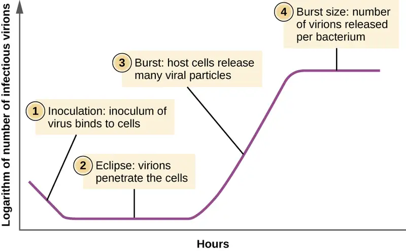
Check Your Understanding
- What aspect of the life cycle of a virus leads to the sudden increase in the growth curve?
Eye on Ethics: Unregistered Treatments
Ebola is incurable and deadly. The outbreak in West Africa in 2014 was unprecedented, dwarfing other human Ebola epidemics in the level of mortality. Of 24,666 suspected or confirmed cases reported, 10,179 people died.9
No approved treatments or vaccines for Ebola are available. While some drugs have shown potential in laboratory studies and animal models, they have not been tested in humans for safety and effectiveness. Not only are these drugs untested or unregistered but they are also in short supply.
Given the great suffering and high mortality rates, it is fair to ask whether unregistered and untested medications are better than none at all. Should such drugs be dispensed and, if so, who should receive them, in light of their extremely limited supplies? Is it ethical to treat untested drugs on patients with Ebola? On the other hand, is it ethical to withhold potentially life-saving drugs from dying patients? Or should the drugs perhaps be reserved for health-care providers working to contain the disease?
In August 2014, two infected US aid workers and a Spanish priest were treated with ZMapp, an unregistered drug that had been tested in monkeys but not in humans. The two American aid workers recovered, but the priest died. Later that month, the WHO released a report on the ethics of treating patients with the drug. Since Ebola is often fatal, the panel reasoned that it is ethical to give the unregistered drugs and unethical to withhold them for safety concerns. This situation is an example of “compassionate use” outside the well-established system of regulation and governance of therapies.
Case in Point: Ebola in the US
On September 24, 2014, Thomas Eric Duncan arrived at the Texas Health Presbyterian Hospital in Dallas complaining of a fever, headache, vomiting, and diarrhea—symptoms commonly observed in patients with the cold or the flu. After examination, an emergency department doctor diagnosed him with sinusitis, prescribed some antibiotics, and sent him home. Two days later, Duncan returned to the hospital by ambulance. His condition had deteriorated and additional blood tests confirmed that he has been infected with the Ebola virus.
Further investigations revealed that Duncan had just returned from Liberia, one of the countries in the midst of a severe Ebola epidemic. On September 15, nine days before he showed up at the hospital in Dallas, Duncan had helped transport an Ebola-stricken neighbor to a hospital in Liberia. The hospital continued to treat Duncan, but he died several days after being admitted.
The timeline of the Duncan case is indicative of the life cycle of the Ebola virus. The incubation time for Ebola ranges from 2 days to 21 days. Nine days passed between Duncan’s exposure to the virus infection and the appearance of his symptoms. This corresponds, in part, to the eclipse period in the growth of the virus population. During the eclipse phase, Duncan would have been unable to transmit the disease to others. However, once an infected individual begins exhibiting symptoms, the disease becomes very contagious. Ebola virus is transmitted through direct contact with droplets of bodily fluids such as saliva, blood, and vomit. Duncan could conceivably have transmitted the disease to others at any time after he began having symptoms, presumably some time before his arrival at the hospital in Dallas. Once a hospital realizes a patient like Duncan is infected with Ebola virus, the patient is immediately quarantined, and public health officials initiate a back trace to identify everyone with whom a patient like Duncan might have interacted during the period in which he was showing symptoms.
Public health officials were able to track down 10 high-risk individuals (family members of Duncan) and 50 low-risk individuals to monitor them for signs of infection. None contracted the disease. However, one of the nurses charged with Duncan’s care did become infected. This, along with Duncan’s initial misdiagnosis, made it clear that US hospitals needed to provide additional training to medical personnel to prevent a possible Ebola outbreak in the US.
- What types of training can prepare health professionals to contain emerging epidemics like the Ebola outbreak of 2014?
- What is the difference between a contagious pathogen and an infectious pathogen?
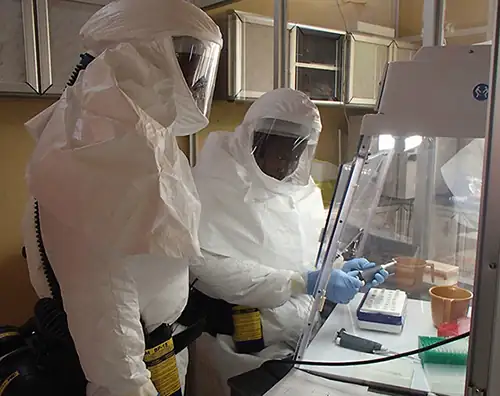
Link to Learning
For additional information about Ebola, please visit the CDC website.
6.3 Isolation, Culture, and Identification of Viruses¶
Learning Objectives
By the end of this section, you will be able to:
- Discuss why viruses were originally described as filterable agents
- Describe the cultivation of viruses and specimen collection and handling
- Compare in vivo and in vitro techniques used to cultivate viruses
At the beginning of this chapter, we described how porcelain Chamberland filters with pores small enough to allow viruses to pass through were used to discover TMV. Today, porcelain filters have been replaced with membrane filters and other devices used to isolate and identify viruses.
Isolation of Viruses¶
Unlike bacteria, many of which can be grown on an artificial nutrient medium, viruses require a living host cell for replication. Infected host cells (eukaryotic or prokaryotic) can be cultured and grown, and then the growth medium can be harvested as a source of virus. Virions in the liquid medium can be separated from the host cells by either centrifugation or filtration. Filters can physically remove anything present in the solution that is larger than the virions; the viruses can then be collected in the filtrate (see Figure 6.16).
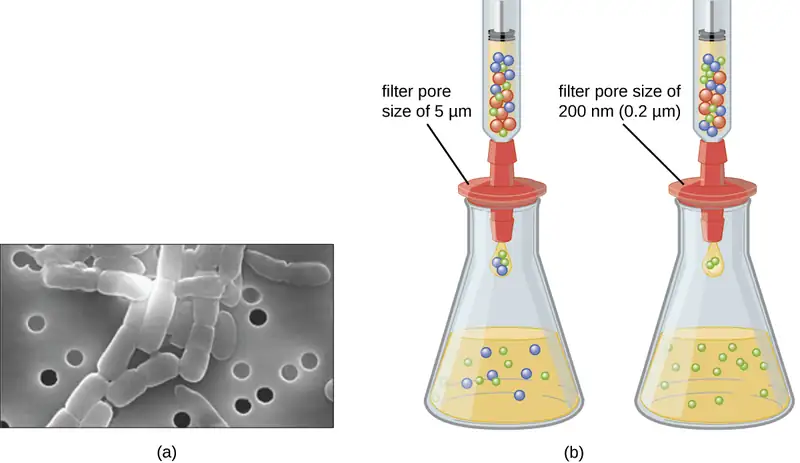
Check Your Understanding
- What size filter pore is needed to collect a virus?
Cultivation of Viruses¶
Viruses can be grown in vivo (within a whole living organism, plant, or animal) or in vitro (outside a living organism in cells in an artificial environment. Flat horizontal cell culture flasks (see Figure 6.17(a)) are a common vessel used for in vitro work. Bacteriophages can be grown in the presence of a dense layer of bacteria (also called a bacterial lawn) grown in a 0.7 % soft agar in a Petri dish or flat (horizontal) flask (see Figure 6.17(b)). As the phage kills the bacteria, many plaques are observed among the cloudy bacterial lawn.
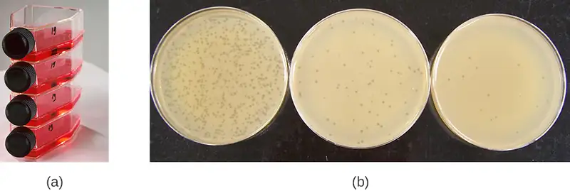
Animal viruses require cells within a host animal or tissue-culture cells derived from an animal. Animal virus cultivation is important for 1) identification and diagnosis of pathogenic viruses in clinical specimens, 2) production of vaccines, and 3) basic research studies. In vivo host sources can be a developing embryo in an embryonated bird’s egg (e.g., chicken, turkey) or a whole animal. For example, most of the influenza vaccine manufactured for annual flu vaccination programs is cultured in hens’ eggs.
The embryo or host animal serves as an incubator for viral replication (see Figure 6.18). Location within the embryo or host animal is important. Many viruses have a tissue tropism, and must therefore be introduced into a specific site for growth. Within an embryo, target sites include the amniotic cavity, the chorioallantoic membrane, or the yolk sac. Viral infection may damage tissue membranes, producing lesions called pox; disrupt embryonic development; or cause the death of the embryo.
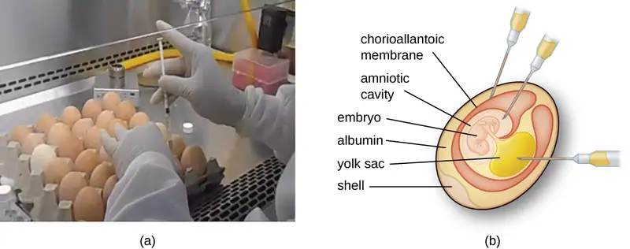
For in vitro studies, various types of cells can be used to support the growth of viruses. A primary cell culture is freshly prepared from animal organs or tissues. Cells are extracted from tissues by mechanical scraping or mincing to release cells or by an enzymatic method using trypsin or collagenase to break up tissue and release single cells into suspension. Because of anchorage-dependence requirements, primary cell cultures require a liquid culture medium in a Petri dish or tissue-culture flask so cells have a solid surface such as glass or plastic for attachment and growth. Primary cultures usually have a limited life span. When cells in a primary culture undergo mitosis and a sufficient density of cells is produced, cells come in contact with other cells. When this cell-to-cell-contact occurs, mitosis is triggered to stop. This is called contact inhibition and it prevents the density of the cells from becoming too high. To prevent contact inhibition, cells from the primary cell culture must be transferred to another vessel with fresh growth medium. This is called a secondary cell culture. Periodically, cell density must be reduced by pouring off some cells and adding fresh medium to provide space and nutrients to maintain cell growth. In contrast to primary cell cultures, continuous cell lines, usually derived from transformed cells or tumors, are often able to be subcultured many times or even grown indefinitely (in which case they are called immortal). Continuous cell lines may not exhibit anchorage dependency (they will grow in suspension) and may have lost their contact inhibition. As a result, continuous cell lines can grow in piles or lumps resembling small tumor growths (see Figure 6.19).
![Figure a begins with induvial cells isolated from lung tissue. These few cells are put on a plate and are the primary cell culture. These cells will grow to fill the plate and will stop when the plate is full; this is called contact inhibition. In order to grow more cells some of these cells are transferred to a new plate; this is now called a secondary cell culture. Figure b begins with transformed cells or individual cells isolated from a tumor that are put on a plate. These cells form a continuous culture because they continue to grow on top of each other even after the plate is full.](img/osc-microbio-06-03-cult.webp)
An example of an immortal cell line is the HeLa cell line, which was originally cultivated from tumor cells obtained from Henrietta Lacks, a patient who died of cervical cancer in 1951. HeLa cells were the first continuous tissue-culture cell line and were used to establish tissue culture as an important technology for research in cell biology, virology, and medicine. Prior to the discovery of HeLa cells, scientists were not able to establish tissue cultures with any reliability or stability. More than six decades later, this cell line is still alive and being used for medical research. See Eye on Ethics: The Immortal Cell Line of Henrietta Lacks to read more about this important cell line and the controversial means by which it was obtained.
Check Your Understanding
- What property of cells makes periodic dilutions of primary cell cultures necessary?
Eye on Ethics: The Immortal Cell Line of Henrietta Lacks
In January 1951, Henrietta Lacks, a 30-year-old African American woman from Baltimore, was diagnosed with cervical cancer at Johns Hopkins Hospital. We now know her cancer was caused by the human papillomavirus (HPV). Cytopathic effects of the virus altered the characteristics of her cells in a process called transformation, which gives the cells the ability to divide continuously. This ability, of course, resulted in a cancerous tumor that eventually killed Mrs. Lacks in October at age 31. Before her death, samples of her cancerous cells were taken without her knowledge or permission. The samples eventually ended up in the possession of Dr. George Gey, a biomedical researcher at Johns Hopkins University. Gey was able to grow some of the cells from Lacks’s sample, creating what is known today as the immortal HeLa cell line. These cells have the ability to live and grow indefinitely and, even today, are still widely used in many areas of research.
According to Lacks’s husband, neither Henrietta nor the family gave the hospital permission to collect her tissue specimen. Indeed, the family was not aware until 20 years after Lacks’s death that her cells were still alive and actively being used for commercial and research purposes. Yet HeLa cells have been pivotal in numerous research discoveries related to polio, cancer, and AIDS, among other diseases. The cells have also been commercialized, although they have never themselves been patented. Despite this, Henrietta Lacks’s estate has never benefited from the use of the cells, although, in 2013, the Lacks family was given control over the publication of the genetic sequence of her cells. In 2023, her family reached a settlement with biotech company Thermo Fisher, whom they had sued for knowingly profiting from the cell line without compensating the Lacks family.
This case raises several bioethical issues surrounding patients’ informed consent and the right to know. At the time Lacks’s tissues were taken, there were no laws or guidelines about informed consent. Does that mean she was treated fairly at the time? Certainly by today’s standards, the answer would be no. Harvesting tissue or organs from a dying patient without consent is not only considered unethical but illegal, regardless of whether such an act could save other patients’ lives. Is it ethical, then, for scientists to continue to use Lacks’s tissues for research, even though they were obtained illegally by today’s standards?
Ethical or not, Lacks’s cells are widely used today for so many applications that it is impossible to list them all. Is this a case in which the ends justify the means? Would Lacks be pleased to know about her contribution to science and the millions of people who have benefited? Would she want her family to be compensated for the commercial products that have been developed using her cells? Or would she feel violated and exploited by the researchers who took part of her body without her consent? Because she was never asked, we will never know.
In 2023, the family of Henrietta Lacks settled a historic lawsuit against Thermo Fischer Scientific.
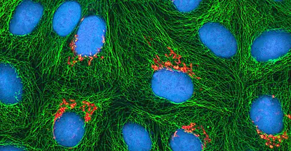
Detection of a Virus¶
Regardless of the method of cultivation, once a virus has been introduced into a whole host organism, embryo, or tissue-culture cell, a sample can be prepared from the infected host, embryo, or cell line for further analysis under a brightfield, electron, or fluorescent microscope. Cytopathic effects (CPEs) are distinct observable cell abnormalities due to viral infection. CPEs can include loss of adherence to the surface of the container, changes in cell shape from flat to round, shrinkage of the nucleus, vacuoles in the cytoplasm, fusion of cytoplasmic membranes and the formation of multinucleated syncytia, inclusion bodies in the nucleus or cytoplasm, and complete cell lysis (see Figure 6.21).
Further pathological changes include viral disruption of the host genome and altering normal cells into transformed cells, which are the types of cells associated with carcinomas and sarcomas. The type or severity of the CPE depends on the type of virus involved. Figure 6.21 lists CPEs for specific viruses.
![This is a table of cytopathic effects of specific viruses. The first example is paramyxovirus which causes syncytium and faint basophilic cytoplasmic inclusion bodies. Small structures are seen within a cell. Next, Poxyvirus results in pink eosinophilic cytoplasmic inclusion bodies (seen as small structures) and cell swelling. Next, Herpesvirus causes cytoplasmic stranding (seen as an eleongation of the cytoplasm) and nuclear inclusion bodies (seen as structures within the nucleus). Finally, Adenovirus causes cell enlargement, rounding, and distinctive grape-like clusters.](img/osc-microbio-06-03-cpetable.webp)
Link to Learning
Watch this video to learn about the effects of viruses on cells.
Hemagglutination Assay¶
A serological assay is used to detect the presence of certain types of viruses in patient serum. Serum is the straw-colored liquid fraction of blood plasma from which clotting factors have been removed. Serum can be used in a direct assay called a hemagglutination assay to detect specific types of viruses in the patient’s sample. Hemagglutination is the agglutination (clumping) together of erythrocytes (red blood cells). Many viruses produce surface proteins or spikes called hemagglutinins that can bind to receptors on the membranes of erythrocytes and cause the cells to agglutinate. Hemagglutination is observable without using the microscope, but this method does not always differentiate between infectious and noninfectious viral particles, since both can agglutinate erythrocytes.
To identify a specific pathogenic virus using hemagglutination, we must use an indirect approach. Proteins called antibodies, generated by the patient’s immune system to fight a specific virus, can be used to bind to components such as hemagglutinins that are uniquely associated with specific types of viruses. The binding of the antibodies with the hemagglutinins found on the virus subsequently prevent erythrocytes from directly interacting with the virus. So when erythrocytes are added to the antibody-coated viruses, there is no appearance of agglutination; agglutination has been inhibited. We call these types of indirect assays for virus-specific antibodies hemagglutination inhibition (HAI) assays. HAI can be used to detect the presence of antibodies specific to many types of viruses that may be causing or have caused an infection in a patient even months or years after infection (see Figure 6.22). This assay is described in greater detail in Agglutination Assays.
![This chart has three columns labeled components, interactions and mictotiter results. In row A the components are the red blood cells which do not interact with anything and show no reaction in a microtiter result. The lack of reaction is seen as a small red dot in the center of the well. In row B the components are viruses and red blood cells. The viruses and red blood cells clump together and this is seen in a microtiter result as redness throughout the well. This is called hemagglutination. In row C, the components are viruses, red blood cells and antibodies. The viruses and antibodies clump together but the red blood cells do not clump with anything. This is again seen as no reaction; this is called hemagglutination inhibition.](img/osc-microbio-06-03-agglutin.webp)
Check Your Understanding
- What is the outcome of a positive HIA test?
Nucleic Acid Amplification Test¶
Nucleic acid amplification tests (NAAT) are used in molecular biology to detect unique nucleic acid sequences of viruses in patient samples. Polymerase chain reaction (PCR) is an NAAT used to detect the presence of viral DNA in a patient’s tissue or body fluid sample. PCR is a technique that amplifies (i.e., synthesizes many copies) of a viral DNA segment of interest. Using PCR, short nucleotide sequences called primers bind to specific sequences of viral DNA, enabling identification of the virus.
Reverse transcriptase-PCR (RT-PCR) is an NAAT used to detect the presence of RNA viruses. RT-PCR differs from PCR in that the enzyme reverse transcriptase (RT) is used to make a cDNA from the small amount of viral RNA in the specimen. The cDNA can then be amplified by PCR. Both PCR and RT-PCR are used to detect and confirm the presence of the viral nucleic acid in patient specimens.
Case in Point: HPV Scare
Michelle, a 21-year-old nursing student, came to the university clinic worried that she might have been exposed to a sexually transmitted disease (STD). Her sexual partner had recently developed several bumps on the base of his penis. He had put off going to the doctor, but Michelle suspects they are genital warts caused by HPV. She is especially concerned because she knows that HPV not only causes warts but is a prominent cause of cervical cancer. She and her partner always use condoms for contraception, but she is not confident that this precaution will protect her from HPV.
Michelle’s physician finds no physical signs of genital warts or any other STDs, but recommends that Michelle get a Pap smear along with an HPV test. The Pap smear will screen for abnormal cervical cells and the CPEs associated with HPV; the HPV test will test for the presence of the virus. If both tests are negative, Michelle can be more assured that she most likely has not become infected with HPV. However, her doctor suggests it might be wise for Michelle to get vaccinated against HPV to protect herself from possible future exposure.
- Why does Michelle’s physician order two different tests instead of relying on one or the other?
Enzyme Immunoassay¶
Enzyme immunoassays (EIAs) rely on the ability of antibodies to detect and attach to specific biomolecules called antigens. The detecting antibody attaches to the target antigen with a high degree of specificity in what might be a complex mixture of biomolecules. Also included in this type of assay is a colorless enzyme attached to the detecting antibody. The enzyme acts as a tag on the detecting antibody and can interact with a colorless substrate, leading to the production of a colored end product. EIAs often rely on layers of antibodies to capture and react with antigens, all of which are attached to a membrane filter (see Figure 6.23). EIAs for viral antigens are often used as preliminary screening tests. If the results are positive, further confirmation will require tests with even greater sensitivity, such as a western blot or an NAAT. EIAs are discussed in more detail in EIAs and ELISAs.
![The explanation of EIA is separated to show what occurs in a positive sample and what occurs in a negative sample. First patient sample is applied to a membrane filter. If the sample contains viruses they are trapped by the filter. Next, antibody with enzyme conjugate is added. Antibody will attach to antigen if present. Next is a wash step. If the virus is present the enzyme binds to the virus, otherwise the enzyme washes away. Finally substrate is added. If the antibody is present (because it is bound to the virus) the attached enzyme causes a color change. If no enzyme linked antibody is present, no color change occurs.](img/osc-microbio-06-03-eia.webp)
Check Your Understanding
- What typically indicates a positive EIA test?
Clinical Focus: Part 3
Along with the RT/PCR analysis, David’s saliva was also collected for viral cultivation. In general, no single diagnostic test is sufficient for antemortem diagnosis, since the results will depend on the sensitivity of the assay, the quantity of virions present at the time of testing, and the timing of the assay, since release of virions in the saliva can vary. As it turns out, the result was negative for viral cultivation from the saliva. This is not surprising to David’s doctor, because one negative result is not an absolute indication of the absence of infection. It may be that the number of virions in the saliva is low at the time of sampling. It is not unusual to repeat the test at intervals to enhance the chance of detecting higher virus loads.
- Should David’s doctor modify his course of treatment based on these test results?
Jump to the next Clinical Focus box. Go back to the previous Clinical Focus box.
6.4 Viroids, Virusoids, and Prions¶
Learning Objectives
By the end of this section, you will be able to:
- Describe viroids and their unique characteristics
- Describe virusoids and their unique characteristics
- Describe prions and their unique characteristics
Research attempts to discover the causative agents of previously uninvestigated diseases have led to the discovery of nonliving disease agents quite different from viruses. These include particles consisting only of RNA or only of protein that, nonetheless, are able to self-propagate at the expense of a host—a key similarity to viruses that allows them to cause disease conditions. To date, these discoveries include viroids, virusoids, and the proteinaceous prions.
Viroids¶
In 1971, Theodor Diener, a pathologist working at the Agriculture Research Service, discovered an acellular particle that he named a viroid, meaning “virus-like.” Viroids consist only of a short strand of circular RNA capable of self-replication. The first viroid discovered was found to cause potato tuber spindle disease, which causes slower sprouting and various deformities in potato plants (see Figure 6.24). Like viruses, potato spindle tuber viroids (PSTVs) take control of the host machinery to replicate their RNA genome. Unlike viruses, viroids do not have a protein coat to protect their genetic information.
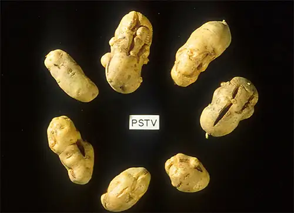
Viroids can result in devastating losses of commercially important agricultural food crops grown in fields and orchards. Since the discovery of PSTV, other viroids have been discovered that cause diseases in plants. Tomato planta macho viroid (TPMVd) infects tomato plants, which causes loss of chlorophyll, disfigured and brittle leaves, and very small tomatoes, resulting in loss of productivity in this field crop. Avocado sunblotch viroid (ASBVd) results in lower yields and poorer-quality fruit. ASBVd is the smallest viroid discovered thus far that infects plants. Peach latent mosaic viroid (PLMVd) can cause necrosis of flower buds and branches, and wounding of ripened fruit, which leads to fungal and bacterial growth in the fruit. PLMVd can also cause similar pathological changes in plums, nectarines, apricots, and cherries, resulting in decreased productivity in these orchards, as well. Viroids, in general, can be dispersed mechanically during crop maintenance or harvesting, vegetative reproduction, and possibly via seeds and insects, resulting in a severe drop in food availability and devastating economic consequences.
Check Your Understanding
- What is the genome of a viroid made of?
Virusoids¶
A second type of pathogenic RNA that can infect commercially important agricultural crops are the virusoids, which are subviral particles best described as non–self-replicating ssRNAs. RNA replication of virusoids is similar to that of viroids but, unlike viroids, virusoids require that the cell also be infected with a specific “helper” virus. There are currently only five described types of virusoids and their associated helper viruses. The helper viruses are all from the family of Sobemoviruses. An example of a helper virus is the subterranean clover mottle virus, which has an associated virusoid packaged inside the viral capsid. Once the helper virus enters the host cell, the virusoids are released and can be found free in plant cell cytoplasm, where they possess ribozyme activity. The helper virus undergoes typical viral replication independent of the activity of the virusoid. The virusoid genomes are small, only 220 to 388 nucleotides long. A virusoid genome does not code for any proteins, but instead serves only to replicate virusoid RNA.
Virusoids belong to a larger group of infectious agents called satellite RNAs, which are similar pathogenic RNAs found in animals. Unlike the plant virusoids, satellite RNAs may encode for proteins; however, like plant virusoids, satellite RNAs must coinfect with a helper virus to replicate. One satellite RNA that infects humans and that has been described by some scientists as a virusoid is the hepatitis delta virus (HDV), which, by some reports, is also called hepatitis delta virusoid. Much larger than a plant virusoid, HDV has a circular, ssRNA genome of 1,700 nucleotides and can direct the biosynthesis of HDV-associated proteins. The HDV helper virus is the hepatitis B virus (HBV). Coinfection with HBV and HDV results in more severe pathological changes in the liver during infection, which is how HDV was first discovered.
Check Your Understanding
- What is the main difference between a viroid and a virusoid?
Prions¶
At one time, scientists believed that any infectious particle must contain DNA or RNA. Then, in 1982, Stanley Prusiner, a medical doctor studying scrapie (a fatal, degenerative disease in sheep) discovered that the disease was caused by proteinaceous infectious particles, or prions. Because proteins are acellular and do not contain DNA or RNA, Prusiner’s findings were originally met with resistance and skepticism; however, his research was eventually validated, and he received the Nobel Prize in Physiology or Medicine in 1997.
A prion is a misfolded rogue form of a normal protein (PrPc) found in the cell. This rogue prion protein (PrPsc), which may be caused by a genetic mutation or occur spontaneously, can be infectious, stimulating other endogenous normal proteins to become misfolded, forming plaques (see Figure 6.25). Today, prions are known to cause various forms of transmissible spongiform encephalopathy (TSE) in human and animals. TSE is a rare degenerative disorder that affects the brain and nervous system. The accumulation of rogue proteins causes the brain tissue to become sponge-like, killing brain cells and forming holes in the tissue, leading to brain damage, loss of motor coordination, and dementia (see Figure 6.26). Infected individuals are mentally impaired and become unable to move or speak. There is no cure, and the disease progresses rapidly, eventually leading to death within a few months or years.
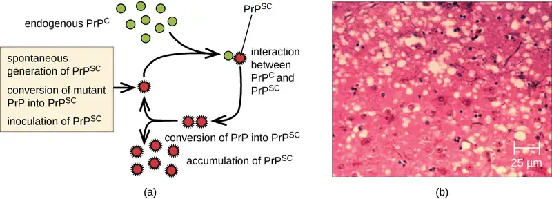
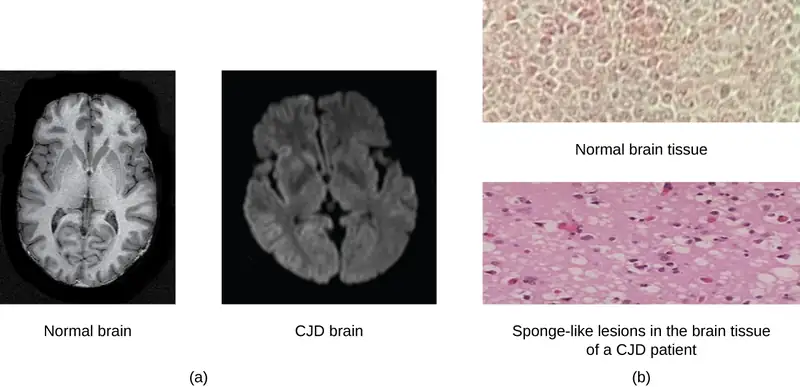
TSEs in humans include kuru, fatal familial insomnia, Gerstmann-Straussler-Scheinker disease, and Creutzfeldt-Jakob disease (see Figure 6.26). TSEs in animals include mad cow disease, scrapie (in sheep and goats), and chronic wasting disease (in elk and deer). TSEs can be transmitted between animals and from animals to humans by eating contaminated meat or animal feed. Transmission between humans can occur through heredity (as is often the case with GSS and CJD) or by contact with contaminated tissue, as might occur during a blood transfusion or organ transplant. There is no evidence for transmission via casual contact with an infected person. Table 6.3 lists TSEs that affect humans and their modes of transmission.
Table 6.3
| Transmissible Spongiform Encephalopathies (TSEs) in Humans | |
|---|---|
| Disease | Mechanism(s) of Transmission10 |
| Sporadic CJD (sCJD) | Not known; possibly by alteration of normal prior protein (PrP) to rogue form due to somatic mutation |
| Variant CJD (vCJD) | Eating contaminated cattle products and by secondary bloodborne transmission |
| Familial CJD (fCJD) | Mutation in germline PrP gene |
| Iatrogenic CJD (iCJD) | Contaminated neurosurgical instruments, corneal graft, gonadotrophic hormone, and, secondarily, by blood transfusion |
| Kuru | Eating infected meat through ritualistic cannibalism |
| Gerstmann-Straussler-Scheinker disease (GSS) | Mutation in germline PrP gene |
| Fatal familial insomnia (FFI) | Mutation in germline PrP gene |
Prions are extremely difficult to destroy because they are resistant to heat, chemicals, and radiation. Even standard sterilization procedures do not ensure the destruction of these particles. Currently, there is no treatment or cure for TSE disease, and contaminated meats or infected animals must be handled according to federal guidelines to prevent transmission.
Check Your Understanding
- Does a prion have a genome?
Link to Learning
For more information on the handling of animals and prion-contaminated materials, visit the guidelines published on WHO website.
Clinical Focus: Resolution
A few days later, David’s doctor receives the results of the immunofluorescence test on his skin sample. The test is negative for rabies antigen. A second viral antigen test on his saliva sample also comes back negative. Despite these results, the doctor decides to continue David’s current course of treatment. Given the positive RT-PCR test, it is best not to rule out a possible rabies infection.
Near the site of the bite, David receives an injection of rabies immunoglobulin, which attaches to and inactivates any rabies virus that may be present in his tissues. Over the next 14 days, he receives a series of four rabies-specific vaccinations in the arm. These vaccines activate David’s immune response and help his body recognize and fight the virus. Thankfully, with treatment, David symptoms improve and he makes a full recovery.
Not all rabies cases have such a fortunate outcome. In fact, rabies is usually fatal once the patient starts to exhibit symptoms, and postbite treatments are mainly palliative (i.e., sedation and pain management).
Go back to the previous Clinical Focus box.
Chapter Review¶
Key Concepts and Summary¶
6.1 Viruses¶
- Viruses are generally ultramicroscopic, typically from 20 nm to 900 nm in length. Some large viruses have been found.
- Virions are acellular and consist of a nucleic acid, DNA or RNA, but not both, surrounded by a protein capsid. There may also be a phospholipid membrane surrounding the capsid.
- Viruses are obligate intracellular parasites.
- Viruses are known to infect various types of cells found in plants, animals, fungi, protists, bacteria, and archaea. Viruses typically have limited host ranges and infect specific cell types.
- Viruses may have helical, polyhedral, or complex shapes.
- Classification of viruses is based on morphology, type of nucleic acid, host range, cell specificity, and enzymes carried within the virion.
- Like other diseases, viral diseases are classified using ICD codes.
6.2 The Viral Life Cycle¶
- Many viruses target specific hosts or tissues. Some may have more than one host.
- Many viruses follow several stages to infect host cells. These stages include attachment, penetration, uncoating, biosynthesis, maturation, and release.
- Bacteriophages have a lytic or lysogeniccycle. The lytic cycle leads to the death of the host, whereas the lysogenic cycle leads to integration of phage into the host genome.
- Bacteriophages inject DNA into the host cell, whereas animal viruses enter by endocytosis or membrane fusion.
- Animal viruses can undergo latency, similar to lysogeny for a bacteriophage.
- The majority of plant viruses are positive-strand ssRNA and can undergo latency, chronic, or lytic infection, as observed for animal viruses.
- The growth curve of bacteriophage populations is a one-step multiplication curve and not a sigmoidal curve, as compared to the bacterial growth curve.
- Bacteriophages transfer genetic information between hosts using either generalized or specialized transduction.
6.3 Isolation, Culture, and Identification of Viruses¶
- Viral cultivation requires the presence of some form of host cell (whole organism, embryo, or cell culture).
- Viruses can be isolated from samples by filtration.
- Viral filtrate is a rich source of released virions.
- Bacteriophages are detected by presence of clear plaques on bacterial lawn.
- Animal and plant viruses are detected by cytopathic effects, molecular techniques (PCR, RT-PCR), enzyme immunoassays, and serological assays (hemagglutination assay, hemagglutination inhibition assay).
6.4 Viroids, Virusoids, and Prions¶
- Other acellular agents such as viroids, virusoids, and prions also cause diseases. Viroids consist of small, naked ssRNAs that cause diseases in plants. Virusoids are ssRNAs that require other helper viruses to establish an infection. Prions are proteinaceous infectious particles that cause transmissible spongiform encephalopathies.
- Prions are extremely resistant to chemicals, heat, and radiation.
- There are no treatments for prion infection.
Multiple Choice¶
6.1 Viruses¶
1. The component(s) of a virus that is/are extended from the envelope for attachment is/are the:
- capsomeres
- spikes
- nucleic acid
- viral whiskers
Answer
B
2. Which of the following does a virus lack? Select all that apply.
- ribosomes
- metabolic processes
- nucleic acid
- glycoprotein
Answer
A and B
3. The envelope of a virus is derived from the host’s
- nucleic acids
- membrane structures
- cytoplasm
- genome
Answer
B
4. In naming viruses, the family name ends with ________ and genus name ends with _________.
- −virus; −viridae
- −viridae; −virus
- −virion; virus
- −virus; virion
Answer
B
5. What is another name for a nonenveloped virus?
- enveloped virus
- provirus
- naked virus
- latent virus
Answer
C
6.2 The Viral Life Cycle¶
6. Which of the following leads to the destruction of the host cells?
- lysogenic cycle
- lytic cycle
- prophage
- temperate phage
Answer
B
7. A virus obtains its envelope during which of the following phases?
- attachment
- penetration
- assembly
- release
Answer
D
8. Which of the following components is brought into a cell by HIV?
- a DNA-dependent DNA polymerase
- RNA polymerase
- ribosome
- reverse transcriptase
Answer
D
9. A positive-strand RNA virus:
- must first be converted to a mRNA before it can be translated.
- can be used directly to translate viral proteins.
- will be degraded by host enzymes.
- is not recognized by host ribosomes.
Answer
B
10. What is the name for the transfer of genetic information from one bacterium to another bacterium by a phage?
- transduction
- penetration
- excision
- translation
Answer
A
6.3 Isolation, Culture, and Identification of Viruses¶
11. Which of the followings cannot be used to culture viruses?
- tissue culture
- liquid medium only
- embryo
- animal host
Answer
B
12. Which of the following tests can be used to detect the presence of a specific virus?
- EIA
- RT-PCR
- PCR
- all of the above
Answer
D
13. Which of the following is NOT a cytopathic effect?
- transformation
- cell fusion
- mononucleated cell
- inclusion bodies
Answer
C
6.4 Viroids, Virusoids, and Prions¶
14. Which of these infectious agents do not have nucleic acid?
- viroids
- viruses
- bacteria
- prions
Answer
D
15. Which of the following is true of prions?
- They can be inactivated by boiling at 100 °C.
- They contain a capsid.
- They are a rogue form of protein, PrP.
- They can be reliably inactivated by an autoclave.
Answer
C
True/False¶
16. True or False: Scientists have identified viruses that are able to infect fungal cells.
Answer
True
Fill in the Blank¶
6.1 Viruses¶
17. A virus that infects a bacterium is called a/an ___________________.
Answer
bacteriophage
18. A/an __________ virus possesses characteristics of both a polyhedral and helical virus.
Answer
complex
19. A virus containing only nucleic acid and a capsid is called a/an ___________________ virus or __________________ virus.
Answer
naked or nonenveloped
20. The ____________ _____________ on the bacteriophage allow for binding to the bacterial cell.
Answer
tail fibers
6.2 The Viral Life Cycle¶
21. An enzyme from HIV that can make a copy of DNA from RNA is called _______________________.
Answer
reverse transcriptase
22. For lytic viruses, _________________ is a phase during a viral growth curve when the virus is not detected.
Answer
eclipse
6.3 Isolation, Culture, and Identification of Viruses¶
23. Viruses can be diagnosed and observed using a(n) _____________ microscope.
Answer
Electron
24. Cell abnormalities resulting from a viral infection are called ____________ _____________.
Answer
cytopathic effects
6.4 Viroids, Virusoids, and Prions¶
25. Both viroids and virusoids have a(n) _________ genome, but virusoids require a(n) _________ to reproduce.
Answer
RNA, helper virus
Short Answer¶
6.1 Viruses¶
26. Discuss the geometric differences among helical, polyhedral, and complex viruses.
27. What was the meaning of the word “virus” in the 1880s and why was it used to describe the cause of tobacco mosaic disease?
6.2 The Viral Life Cycle¶
28. Briefly explain the difference between the mechanism of entry of a T-even bacteriophage and an animal virus.
29. Discuss the difference between generalized and specialized transduction.
30. Differentiate between lytic and lysogenic cycles.
6.3 Isolation, Culture, and Identification of Viruses¶
31. Briefly explain the various methods of culturing viruses.
6.4 Viroids, Virusoids, and Prions¶
32. Describe the disease symptoms observed in animals infected with prions.
Critical Thinking¶
6.1 Viruses¶
33. Name each labeled part of the illustrated bacteriophage.
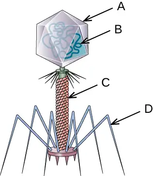
34. In terms of evolution, which do you think arises first? The virus or the host? Explain your answer.
35. Do you think it is possible to create a virus in the lab? Imagine that you are a mad scientist. Describe how you would go about creating a new virus.
6.2 The Viral Life Cycle¶
36. Label the five stages of a bacteriophage infection in the figure:
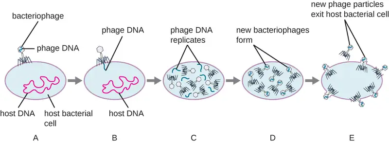
37. Bacteriophages have lytic and lysogenic cycles. Discuss the advantages and disadvantages for the phage.
38. How does reverse transcriptase aid a retrovirus in establishing a chronic infection?
39. Discuss some methods by which plant viruses are transmitted from a diseased plant to a healthy one.
6.3 Isolation, Culture, and Identification of Viruses¶
40. Label the components indicated by arrows.
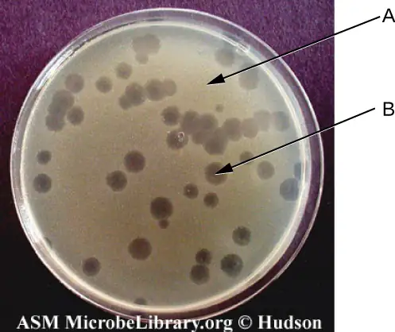
41. What are some characteristics of the viruses that are similar to a computer virus?
6.4 Viroids, Virusoids, and Prions¶
42. Does a prion replicate? Explain.
Adapted from Microbiology by OpenStax, licensed under CC BY 4.0. Access the original for free at openstax.org. Changes: converted to the web reading format of The Open Book Project.
-
S. Riedel “Edward Jenner and the History of Smallpox and Vaccination.” Baylor University Medical Center Proceedings 18, no. 1 (January 2005): 21–25. ↩
-
H. Lecoq. “[Discovery of the First Virus, the Tobacco Mosaic Virus: 1892 or 1898?].” Comptes Rendus de l’Academie des Sciences – Serie III – Sciences de la Vie 324, no. 10 (2001): 929–933. ↩
-
US Department of Health and Human Services, Centers for Disease Control and Prevention. “Antibiotic Resistance Threats in the United States, 2013.” http://www.cdc.gov/drugresistance/pdf/ar-threats-2013-508.pdf (accessed September 22, 2015). ↩
-
M. Clokie et al. “Phages in Nature.” Bacteriophage 1, no. 1 (2011): 31–45. ↩
-
A. Sulakvelidze et al. “Bacteriophage Therapy.” Antimicrobial Agents and Chemotherapy 45, no. 3 (2001): 649–659. ↩
-
US Food and Drug Administration. “FDA Approval of Listeria-specific Bacteriophage Preparation on Ready-to-Eat (RTE) Meat and Poultry Products.” http://www.fda.gov/food/ingredientspackaginglabeling/ucm083572.htm (accessed September 22, 2015). ↩
-
N. Philippe et al. “Pandoraviruses: Amoeba Viruses with Genomes up to 2.5 Mb Reaching that of Parasitic Eukaryotes.” Science 341, no. 6143 (2013): 281–286. ↩
-
J. Cohen. “What’s Old Is New: 1918 Virus Matches 2009 H1N1 Strain. Science 327, no. 5973 (2010): 1563–1564. ↩
-
World Health Organization. “WHO Ebola Data and Statistics.” March 18, 2005. http://apps.who.int/gho/data/view.ebola-sitrep.ebola-summary-20150318?lang=en ↩
-
National Institute of Neurological Disorders and Stroke. “Creutzfeldt-Jakob Disease Fact Sheet.” http://www.ninds.nih.gov/disorders/cjd/detail_cjd.htm (accessed December 31, 2015). ↩